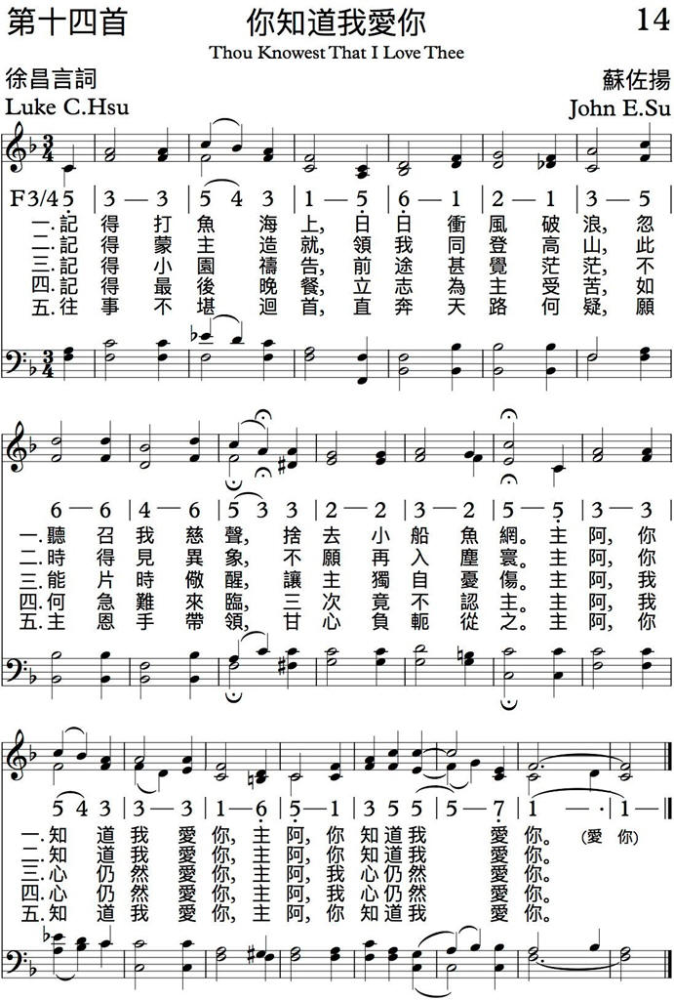

|
|
你知道我愛你 You Know I Love You |
|
|
|
|

|
|
|
|
|

|
|
你知道我愛你 You Know I Love You |
|
|
|
|

|
|
|
|
|

1943 貴州 曲蘇佐揚
1、 記 得 打魚 海 上 ，日 日 衝風 破 浪， 忽聽 召 我慈 聲 ，
捨去 小 船漁 網 。 主 啊！ 你 知道 我 愛 你 （ 重 句 ） 。
2、 記 得 蒙 主 造 就 ，領 我 同登 高 山， 此 時 得 見異 象 ，
不願 再 入塵 寰 。 主 啊！ 你 知道 我 愛 你 （ 重 句 ） 。
3、 記 得 小園 禱 告 ， 前 途 甚覺 茫 茫， 不能 片 時儆 醒 ，
讓主 獨 自憂 傷 。 主 啊！ 我 心仍 然 愛 你 （ 重 句 ） 。
4、 記 得 最後 晚 餐 ，立 志 為 主 受 苦， 如何 急 難 來 臨 ，
三 次 竟 不認 主 。 主 啊！ 我 心仍 然 愛 你 （ 重 句 ） 。
5、 往 事 不堪 回 首 ，直 奔 天 路 何 疑， 願主 親 手帶 領 ，
甘心 負 軛從 之 。 主 啊！ 你 知道 我 愛 你 （ 重 句 ） 。
詩詞作者徐昌言老師是一位精通中國文學的學者，學生們背後都尊稱他為「老夫子」。五十年代初，現今中文大學之前身新亞書院欲以高薪聘請他為教授，卻被他婉拒。因老師自早年在上海伯特利中學信主後，已立志獻身在伯利事奉神。老師於一九三八年隨伯特利神學院自上海逃難至香港。同年伯特利神學院在香
港開始上課和接受新生入學。
但好景不常，一九四一年十二月日軍佔領香港。日軍不但斷絕了伯特利神學院來自美國的支持，而且也經常干涉騷擾神學院，神學院被逼離港遷往貴州獨山。一年半後日軍逼近獨山，伯特利神學院再次遷往貴州西北部的畢節縣。一九四五年日軍投降，伯特利神學院於一九四六年回到上海復校。一九四七年初，香港英國政府將在日本統治時期被日軍佔用的嘉林邊道院址歸還伯特利教會，同時還將被日本政府凍結的銀行存款歸還伯特利教會。於是伯特利神學院再次由上海遷來香港，並在同年三月三日正式在港復校。
老師一家大小也隨著伯特利神學院回到香港，老師忠心地在伯特利中學、伯特利神學院教學直到退休移民加拿大。後來老師又帶同師母回港在神學院事奉兩年。一九八零年他在加拿大被主接去。為何徐昌言老師甘願婉拒高薪的教席？為何徐昌言老師甘願默默地將一生獻在神學教育事工上？從這首他親自寫的詩歌中，我們不難找到答案。
這首詩詞寫於一九四二年，長期艱難的漂流生活並沒有絲毫動搖老師事奉神的心願，他所經歷的如同主耶穌的門徒一般，拋下世上的一切跟隨主。當時老師帶領一批伯特利神學院師生自香港逃難到貴州獨山，逢富有音樂恩賜的蘇佐揚牧師也在貴州獨山從事教導神學生的事工，
由於志趣相同，成為好友。一日飯後，老師將寫成的詩詞交於蘇牧師，請他配上樂譜，並答應事成之後，贈送大肥雞壹隻，蘇牧師接過詩詞，讀後深受感動。即時為此詩詞配上樂譜，更請神學生馬上油印數十份，在晚禱會時學唱。當晚許多學唱旳人都被這首新詩感動得暗自流淚。
自此，這首詩歌就成為許多中國信徒喜愛的聖詩。堅定了無數青年人奉獻的心志。也成為許多夏令會及退修會詩集中必選之詩歌。
徐昌言老師不但用他的心寫出了這首詩歌，同時也以自己的一生見證出這一首感人的詩歌，願一切榮耀歸與神。(摘自中國伯
特利差會資料 1998)
http://www.weml.org.hk/web_read/song_in/14.pdf
（約翰福音廿一章
15-19
節）
他們吃完了早飯，耶穌對西門彼得說：「約翰的兒子西門，你愛我比這些更深麼？」彼得說：「主阿！是的，你知道我愛你。」耶穌對他說：「你餵養我的小羊。」耶穌第二次又對他說：「約翰的兒子西門，
你愛我麼？」彼得說：「主阿，是的，你知道我愛你。」耶穌說：「你牧養我的羊。」
第三次對他說：「約翰的兒子西門，你愛我麼？」彼得因為耶穌第三次對他說：你愛我麼？就憂愁，對耶穌說：「主阿，你是無所不知的，你知道我愛你。」耶穌說：「你餵養我的羊。我實實在在的告訴你，你年少的時候，自己束上帶子，隨意往來；但年老的時候，你要伸出手來，別人要把你束上，帶你到不願意去的地方。」耶穌說這話，是指著彼得要怎樣死榮耀神。說了這話，就對他說：「你跟從我罷！」
主耶穌從死中復活之後，曾多次向祂的門徒顯現，這次在加利利海特別向彼得顯現，而且要考問他的愛心。一題到彼得，我們對他會有一個不良的印象，就是說：彼得曾經三次不認主。我們很容易說出別人的短處，而忘記別人的長處。主耶穌並非如此。當祂從死裡復活，吩咐天使報信之時，天使對婦女們說：「耶穌已經復活了……你們可以去告訴祂的門徒和彼得」（可十六
1-7）。為什麼特別題起彼得的名字呢？這就證明雖然他三次不認主，主並沒有三次不認他。你可以忘記祂，祂卻不會忘記你。即使你離開祂，祂慈愛的眼睛每時每刻都盯住你。你對祂的愛可能改變，祂對你的愛毫不動搖。
在中文聖經中，我們似乎看不明白耶穌與彼得對答的真相。試問：彼得曾經三次不認主，他怎能有資格說愛主呢？假如你曾經三次不認主，如果主今日向你顯現，問你說：「你愛我嗎？」你怎樣回答呢？如果我是彼得，曾經這樣忘恩負義地對主，主如果問我是否愛祂，我真巴不得地上有一個洞，讓我可以鑽進去，因為我實在沒有臉再見愛我的主。
彼得為什麼會回答主說：「主阿，是的，你知道我愛你」呢？他還不知道羞恥嗎？為什麼呢？
在原文聖經中，很清楚地告訴我們這問答的真相。原文希拉文有兩個不同的「愛」字，中文和英文都無法譯得出，多種版本的聖經，包括日、德、法、意、挪、瑞等，也無法在譯經時將這兩個愛字分別出來。主耶穌問彼得的那個愛字是「理智的愛，不改變的愛」，簡稱「理愛」。
原文為
ajgapajw（AGAPAO）。神愛世人，就是這個愛字。主耶穌是這樣問彼得說：「你用理智的愛來愛我麼？」
彼得回答耶穌的那個愛字乃是「情感的愛，會改變的愛」，簡稱「情愛」。原文為
filejw（
PHILEO）。今天可能是如膠似漆似的朋友，明天可能是不共戴天的仇人。彼得回答耶穌是這樣說的：「主阿，是的，你知道我是用情感的愛來愛你。」
因此，第 15-17
節的實際問答，乃是這樣：耶穌對西門彼得說：「約翰的兒子西門，你用理智的愛來愛我，比這些更深麼？」彼得說：「主阿，是的，你知道我用情感的愛來愛你」（15
節）。第二次問他也是這樣（16
節），彼得答非所問。
主耶穌第三次問他說：「約翰的兒子西門，你用情感的愛來
愛我麼？」彼得因為耶穌第三次對他說：你用情感的愛來愛我麼？就憂愁，對耶穌說：「主阿，你是無所不知的（原文知字為自然而知），你知道（原文為認識而知）我實在是用情感的愛來愛你。」
彼得以前對主，實在是用情感的愛，他輕舉妄動，喜露鋒芒，隨意發言，以快己心。經不起打擊，竟然失敗在一個弱質使女面前，不認恩主。他在三次不認主以後，曾出去痛哭，巴不得用眼淚來洗掉自己的污點：他可能以為主耶穌已經不愛他了，但出乎他意料之外，主竟然今天向他顯現，用考問他愛主的心來顯出主對他的愛並不改變。經過這次愛心的考驗之後，彼得再一次將自己奉獻在主手中，從此以後，全心愛主，為主而活，為主而死，永不取回，永為主用。
親愛的弟兄姊妹！你怎樣愛主呢？你用什麼愛去愛祂呢？你用理智的愛去愛祂嗎？還是用情感的愛、會改變的愛去愛祂呢？當神賜福給你的時候，你就愛祂嗎？當苦難來臨之時，你就埋怨祂嗎？祂對你從來不改慈顏，你對祂的愛為什麼搖動呢？你剛信主的時候，多麼熱心事奉主呢？現在為什麼對祂冷若冰霜呢？希望你拾起所丟掉的起初的愛，重新愛祂，全心愛祂。「任憑海枯石爛，主阿我深愛你」。
第 18
節是描寫彼得一生的兩大階段，主說：「我實實在在的告訴你，你年少的時候，自己束上帶子，隨意往來；但年老的時候，你要伸出手來，別人要把你束上，帶你到不願意去的地方。」在這裡「隨意往來」這一句，意味非常深長。這句話不但叙述彼得靈性幼稚的生活是如何可笑，它也描寫今天許多基督徒的靈性生活如何叫神傷心。「隨意往來」，不問主是否喜歡我們這樣
做，「隨意往來」，不管別人是否會因我得快樂抑受損害，「隨意往來」，正好給魔鬼留地步，「隨意往來」，行在神的旨意之外，也消極地破壞神的計畫。
請問：你信主已許多年，常常隨意往來呢，還是每一件事都尋求神的旨意，好讓祂為你所擬好的計畫得以逐步完成呢？我們時常覺得自己相當聰明，不必事先禱告，不必去探討神如何為你安排，便擅自行事，輕舉妄動，雖然已經走出神旨之外，已經走入歧途之中，還沾沾自喜，怡然自得，實在可憐之至。
神的旨意有兩種：一 種 是
「 願 意 的 旨 意 」 ， 原 文 為
q e
j
lh
m a
（THELEIMA），這是神為我們所決定的旨意，為我們所擬好的計畫，為我們所安排的道路。我們如果順服神這願意的旨意，神的心會得到快樂，我們也會蒙福，別人也會因我們得福。第二種是「許可的旨意」，
原文為
ejpitrop（EPITROPE）
這並不是神願意我們去做，我們偏要去做，而得神許可，或勉強許可的。這樣的事，我們作了，我們自己快樂，神會悅，別人也不會快樂。我們許多時候說錯了話，說：「主若許可」，但這句話在聖經中只說過兩次，其餘都是題到「神的旨意」（願意的旨意），即「主若願意」。我們應該說：「主若願意，我們就可以作這事，或作那事」（雅四
15）。
我們如果愛主，如果尋求神的旨意，不是為著滿足自己的慾望，乃是為著滿足祂的心。
這裡有一個很小的比方：有一次在一個地方講道八天，後來我的聲音差不多都啞了。那位與我在一起的牧師對我說：「你聲音啞了，吃一個柑吧！吃了，你的聲音就會好些。」這就是這位愛我的牧師原定的計畫，好比神「願意的旨意」。但我對他
說：「我不要吃柑，我要吃一個生雞蛋。」這是我自己的計畫。那位牧師就讓我吃一個生雞蛋，是他許可我吃的，好比神「許可的旨意」。我吃了那個生雞蛋，我自己快樂，但那位牧師並不快樂，因為不是他原來的計畫。
請問：你是否在言、行、思、態上都摸到神的心，遵行神所
擬定的計畫，使祂美好的旨意能夠逐步完成在你身上？
神為每一個信徒的一生都畫好了一個「藍圖」，好像建築師建造樓房所根據的藍圖一般。祂為我們畫好了一生應該怎樣生活、工作、出入，我們一切的需要，一切幸與不幸的遭遇，也都在祂的計畫中。如果我們行在神的旨意中，我們就有福了，因為祂不會為我們畫錯了藍圖，祂一定將屬天的福氣傾於我們。
但，如果我們走在祂的計畫之外，我們自己的人生便沒有計畫，我們只是走在自己錯誤的道路中，橫衝直闖，在曠野漂蕩，痛苦不安。也許你曾有許多不幸的遭遇，有許多痛苦的人生經驗，恐怕你是在神的旨意之外。如果你今天心中正在不安，或正在痛苦中，恐怕主正等候你回到祂的旨意裡面來。為什麼還要在曠野流蕩呢？
比方：神原定的旨意要我們向上走，我們自己卻要向下走。我們經過長時間的禱告，要求神「讓」我們這樣走。後來，神「讓」我們這樣走，我們沾沾自喜，以為我們禱告「通」了。但神看著我們與祂的旨意背道而馳，心中為我們憂傷。經過一段很長的時期，我們「隨意往來」在曠野漂流，遭受到很多無名的痛苦，以後才知難而退，在神前悔改，乖乖地回到主的旨意中。可是，為什麼不早些遵行神的旨意呢？為什麼叫愛你的主因你走出神旨之外而為你憂傷呢？為什麼要浪費神寶貴的光陰呢？
彼得，你曾隨意往來，自討苦吃，現在你還要這樣嗎？我們可以猜想：彼得一面聽著慈愛的主題醒他，一面流著悔改之淚，心中誠懇地對主說：「從今以後，
我要專心愛你。」彼得經過這一次重新奉獻之後，神就重用他，後來在五旬節的時候講道，竟有三千人悔改。
傳說：在羅馬皇帝尼羅逼迫教會之時，彼得正在羅馬傳道。當時尼羅皇捕捉了許多基督徒，把他們用火燒死，或釘十字架，或餵獅子，或斬首。保羅就是在當時被捕而斬首的。那些信徒便勸彼得逃走，免作無謂的犧牲。彼得對他們說：「我不能走，我不能再不認主。」後來信徒們極力勸他暫避，他心裡有點動搖，便帶著馬可走出羅馬城。
剛出羅馬城，便看見天上有大光，主耶穌在光中向他顯現，彼得一看見主，十分害怕，跪在地上對主說：「主阿，你到什麼地方去？」主說：「我要到羅馬城去為你再釘十字架。」彼得對主說：「主阿，你不要去，讓我去！」說完這話，主便消失不見了。彼得便回到羅馬城去，後來被捕、定罪、要釘十字架。他對行刑的官長說：「我願意為主被釘在十字架上，但我不配和主一樣被釘，請你們將我倒釘十字架。」後來他被倒釘十字架，他的頭在地上，雙腳朝天。我們可以猜想，當他被釘時，主從天上看下來對天使們說：「這是彼得，曾三次不認我；現在卻為我殉命了。」他的犧牲叫主的心得了高度的滿足。
弟兄姊妹們！你如果愛主，你不單要用理智的愛去愛祂，專心愛祂，為祂活也為祂死，使祂的心因你得到滿足，而且獲得高度的滿足。
彼得再將自己奉獻在主手中之後，主曾大大地使用他。在教
會歷史中，神也重用許多事奉祂的僕人，這一切被神重用的人，都是專心愛主，毫無自我，以遵行神旨意為第一任務的人。因為神要用一個人，不是因為他「有恩賜」，乃是因為他「沒有自己」。神用宋尚節博士，就是因為他將世界與虛榮看作糞土，「沒有自己」，所以神用他震動中國和東南亞的教會，復興很多人的心靈。至今海外許多基督徒對他仍然念念不忘。他雖然只活了四十四歲，但他工作的效果，仍然存留到今日，而且還要繼續下去。
在抗戰時期，我在福建工作。當時看見許多人作抗戰歌出售賺錢，也開音樂會得名。我曾一度受試探，也要作抗戰歌來兼收名利。於是我作了四十五首抗戰歌，出版了一本歌集。當我出售了這些抗戰歌集，也指揮有數百學生的大詩班唱抗戰歌。但是，有一天聖靈在我靈修的時候，深深地感動我，對我說：「小子，你的手是屬誰的？為什麼要用奉獻了的手為世界寫作？」我便主說：「主阿，赦免我，我不願用奉獻的手來為世界寫作。我願將我的手再一次奉獻給你，從今以後，我寫每一音符，為你寫，為你彈。」我把那些沒有賣完的抗戰歌集和原稿都燒掉，時至今日，那些抗戰歌，我連一首都記不得，但天人短歌到今天已有三百八十首了(編者按：天人短歌已有
600 首了)，我都記得。抗戰歌有許多人會寫，我不必去作，我要作主所託付而別人不去作的，好完成主的使用，滿足主的心。
假如，沒有那一次再把我的手奉獻給主，我今天可能不再為主寫作許多新的天人短歌和聖歌來供給多人歌唱，榮耀神的名。雖然在這廿年來，也有過多次試探要為世界寫作，但正如保羅所說的「我故此沒有違背那從天上來的異象」。我想到主對我的盼望，想到主的計畫，想到自己愛主的心不足，便不敢輕舉妄動再
為世界寫什麼了。我寧願在物質的享受上艱難些，但我內心所享受的喜樂，是那些因事奉世界而有豐富物質享受的人所難以想像的。我多一次拒絕世界的引誘，我覺得使主的心獲得多一次的愉快，只要能叫主快樂，我為祂受盡人間痛苦，在所不計。
但願我們與千萬聖徒都學會用理智的愛去愛祂，為祂活，也為祂死。希望你從今天起，用不改變的愛去愛祂。現在愛祂，永遠愛祂。又希望你重新奉獻與主，完全為祂使用，不再走在自己的計畫中。讓祂心裡滿足，使祂的旨意得以在你的身上逐步完成。祂正等著再使用你。